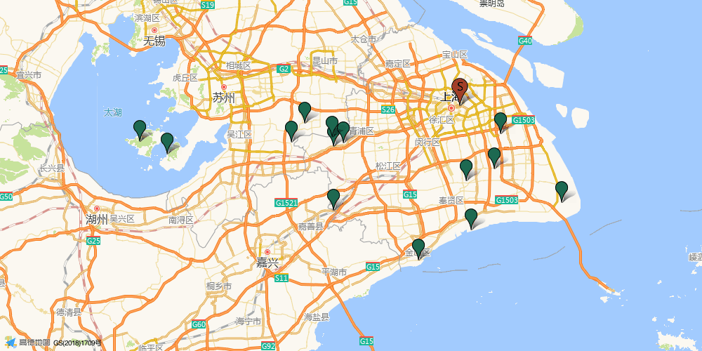

两天一夜 · 玩优先
出行计划
14 条玩法路线，住宿直接跟着对应玩法走。先看白天怎么玩，再在路线里挑 4 房适配和多人设施。
同一套标准比 14 条
周末路线总榜
白天体验 45 · 内容组合 25 · 省心程度 20 · 证据质量 10。住宿不参与加分。
按区域看路线
水乡 · 湖岸 · 森林
青浦 3 条
湖、森林和经典水乡最集中；适合白天玩够，晚上回湖边或古镇附近住。
海边 · 古镇 · 花田
金山 2 条
看海、吃海鲜、逛古镇都在这里；适合愿意多开一点路换海边氛围。
海边 · 手作 · 庭院
奉贤 2 条
海边和庭院住宿能放在一条线里；适合白天少跑、晚上一起玩。
乐园 · 古镇 · 湖岸
浦东 3 条
迪士尼、海昌、新场、川沙方向多；住别墅或古镇里，转场最顺。
古镇 · 太湖 · 岛岸
苏州 4 条
锦溪、周庄和太湖东西山；车程更长，但住宿和湖景更像一次小度假。
高德真实底图 · 陆家嘴出发
先看位置，再选路线
底图和点位来自高德 POI/静态地图；绿色点是主游玩地，红色 S 是陆家嘴。车程来自高德距离测量，出发时仍以实时导航为准。

青浦
B 朱家角 · 游船＋园林＋老街高德驾车 50.9 km · 约 70 分钟 A 淀山湖 · 湖岸骑行＋金泽古镇高德驾车 57.1 km · 约 78 分钟 C 东方绿舟 · 航母＋草地＋淀山湖住宿高德驾车 53.4 km · 约 75 分钟
陆家嘴 S · 出发点
绿色点是主游玩地，住宿放在对应路线里
下方 A–N 打开对应路线